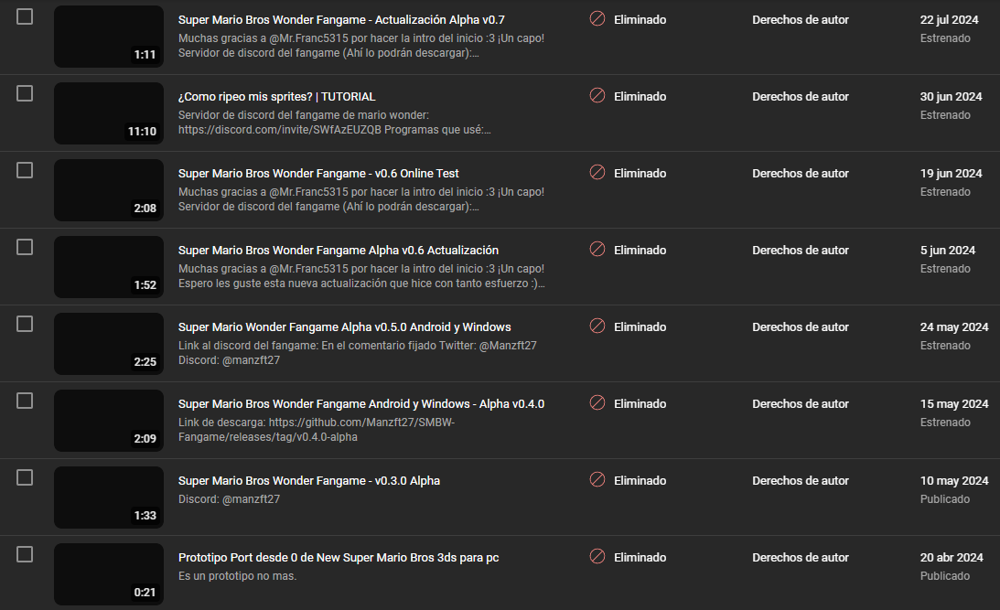
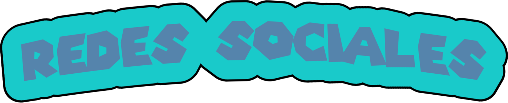

Algunos ya se habrán dado cuenta, algunos no.
Todos los videos referentes al fangame en mi canal fueron borrados por una denuncia de Nintendo of America. Esto representa una señal clave de que están al tanto de algo como lo es este fangame. Ya saben que existe.
Las denuncias de Nintendo of America a mi canal fueron dos, dejandome a una de que mi canal fuera eliminado. Está claro que nintendo no quiere que este fangame exista.
No podré subir más videos a mi canal sobre lanzamientos del fangame, lamentablemente. Al menos no por un tiempo.
Dejaremos que la comunidad que hemos formado se encargue de promocionar ellos mismos este fangame que.
Esto ha sido un golpe fuerte en la motivación y moral personal mía y de todos los del staff de este server, sin embargo..
He decidido llevar este fangame hasta el final, no importa cuánto nintendo se oponga, en cuanto las reclamaciones de autor de mi canal expiren volveré a subir videos del fangame, con titulos y miniaturas más discretas, pero seguiré subiendo.
El fangame recién empieza, aún estamos en la versión alpha, disfruten de cada etapa, no será fácil pero haremos de este fangame algo grande, a pesar de cualquier dificultad.
Espero en estos momentos la comunidad que hemos formado pueda unirse y apoyar al desarrollo, ahora que el fangame más lo necesita.
 